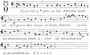
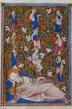
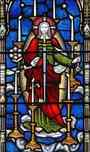

< < < Back
A Reflection On The Antiphons During The Season Of The Advent – Return Of Kings
Greetings to the good men of ROK as we enter the final week before Christmas. To those especially who have been fasting and preparing with quiet of soul for the Feast, I dedicate this article on “Sapientiatide” (or “Wisdomtide”) – the time of heightened expectation in the week before Christmas.
As I’ve said before, it certainly is my intention to be broad in my writing here, generally; but in the midst of such seasons as Advent/Christmas, and Lent/Easter, I would be remiss not to discuss our civilization’s highly developed traditions. So, this article and the next will deal closely with Christmas. This article is also longer than normal, as it has elements that are intended to be consumed one day at a time in the upcoming week.
The O Antiphons
The very, very old melody of the first O Antiphon, “O Wisdom”
Each day of the week preceding Christmas, Western Christians since at least the 8th century have chanted the “O” Antiphons” at Vespers. Christianity reckons the beginning of the day from sundown, so the evening service of Vespers marks the passage from the old day into the new. The canticle of the Magnificat, which the Virgin sang upon visiting her cousin, is thus rightly set in Vespers to reflect the end of the Old Covenant (St. John the Baptist) meeting the beginning of the New (Christ, in the Blessed Virgin).
This canticle is the “high point” of the service, especially on solemn occasions; while singing it, more lights were sometimes lit, incense was brought forth, and the clergy removed their head-coverings. During this week before Christmas, the O antiphons are doubled, the Church is incensed, the bells are rung continuously and all remain standing throughout the whole Magnificat.
The antiphons provide rich material for meditation and reflection. Each antiphon moves forward through all God’s works for man’s salvation, beginning with the eternal, pre-existent plans of Providence, and ending on Doomsday; but, working backwards, they form an acrostic that points forward: ERO CRAS (“Tomorrow I shall be;” many local, medieval variants had a longer, eight-day usage that spelled out VERO CRAS, “Truly, Tomorrow”). This sets the tone – the antiphons contemplate the penetration of the eternal into time, seeking to save mankind. “Truly, tomorrow,” the All-Maker shall be upon us; let our hearts be ready!
I had gone and written a lengthy article on this, at the end of which I was going to recommend to the men the Fish Eaters website for some further information. But upon heading to the webpage myself, I saw that a great deal of information on the antiphons is already there, along with midi files that play the melody, and a clickable musical note that will open musical notation. So, I will include only my thoughts on the themes of the antiphons, below, and some further resources for those who wish to pray them this week.
Some Reflections on the Antiphons
17th December: O Sapientia
This speaks of the Wisdom of God, Alpha and Omega, the first cause and final end of all creatures, the embodiment of that providence which sees and rules and arranges all things. The verse cites the famous “fortiter et suaviter” (“strongly and suavely,” key concepts, I think, to masculinity), taken from Scripture to describe God’s providence (Wisdom of Solomon 8:1). This finds echoes in St. Anicius Manlius Severinus Boethius’ Consolation of Philosophy, and St. Thomas Aquinas’ discussion of providence in the Summa.
18th December: O Adonai
This antiphon addresses Christ the Lord, Adonai in Hebrew. Adonai is a title of great significance, for it became the word used in place of the ineffable name of God, the “tetragrammaton,” YHWH. In the same way, Christ is the “image of the invisible God,” and “the exact figure of His substance.” Additionally, the burning bush, in which God appeared to Moses, was understood from ancient times in the Church as a prefiguration of the Incarnation.
The bush ablaze with godly fire, yet unharmed thereby, is an image of the blessed Virgin, from whom and in whom the Deity came to dwell; whose substance He joined to Himself, when He united the human and divine natures in His one Person. She was suffused with the Divine Presence as no other creature before or since, yet was not destroyed thereby.
Shortly after God reveals Himself to Moses in the bush, He says: “I am the Lord who will bring you out from the work-prison of the Egyptians, and will deliver you from bondage: and redeem you with a high arm, and great judgments.” Similar terms are used in Moses’ canticle after crossing the Red Sea. The return to Sinai resulted in the giving of the Law – thus, in all these ways, the Adonai antiphon points to Christ the Lord Incarnate, Giver and the Fulfillment of the Law, the New Covenant ministered by God in the flesh rather than mediated through angels on Sinai, “a mountain that might be touched, and a burning fire, and a whirlwind, and darkness, and storm.”
19th December: O Radix Iesse
This antiphon refers to Christ as being of David’s blood, from the root of Jesse, bound up in the history of Israel and the Jews, yet coming forth for all people.
A Medieval Illumination, with typical absence of shyness in depicting the descendants of Jesse coming out of his “root.”
20th December: O Clavis David
We saw that the Exodus story was a prefiguration of the salvation Christ would bring to all men, fulfilling what was done only politically and for the Jews in ancient times. The theme continues here; the prior antiphon hinted at the “prison-houses of Egypt,” but now treats of the prison-house of death and hell. Christ calls Himself “the Holy One and True, he that hath the key of David; he that openeth, and no man shutteth; shutteth, and no man openeth.” And again: “I am the First and the Last; alive, and was dead, and behold I am living forevermore, and I have the keys of death and of hell.” From ancient times, Christians depicted Christ’s victory over hell by showing hell’s gates and locks shattered and strewn at his feet.
Continuing the theme of the universal salvation, prefigured in the political history of Israel: as David was King of Israel, so of His line would come the King of all. Thus the prophesy of the Patriarch Jacob over his son, Judah would be fulfilled: “The scepter shall not be taken away from Juda, nor a ruler from his thigh, till He come that is to be sent, and He shall be the expectation of nations” (Genesis 49:10).
Christ hinted that if the Messiah was the Son of David, yet He was greater than David. He asked, “How say they that Christ is the son of David? And David himself saith in the book of Psalms: ‘The Lord said to my Lord, sit thou on my right hand, Till I make thine enemies thy footstool.’ David then calleth him Lord: and how is he his son?” That is the subject of this antiphon – Christ, son of David, God of David, with the key of David to destroy hell and rule as king of all.
21st December: O Oriens
The antiphons now pass from the pepole of Israel to all mankind. The last antiphon referred to Him as the son of David, the Sceptre of the house of Israel, and entreated him to lead forth the prisoner, singular (i.e., Israel); this antiphon refers to Him as the “dayspring,” i.e., the rising sun, ascending from the East to traverse all the way to the West, shining upon all men.
Those who formerly were of Israel rejected their King, the Heir of David; now people from all nations shall be grafted into Israel, and confess Him as King of All. Therefore, this antiphon no longer asks for deliverance of “him” that sits in darkness and the shadow of death,” but “they that sit” therein. The terms (“Sun of Justice,” “Dayspring”) point to the book of Malachi, last in the books of the prophets, referring to God’s relationship as Lord and Saviour of all the Gentiles, beyond just the people of Israel.
Most importantly, “oriens” literally means “rising,” – i.e., the rising sun, the East – and form ancient times the Christians used this title for Christ in His Resurrection (rising up from the earth, like the sun from the horizon); this Antiphon points to His Resurrection.
Summing up the themes of O Clavis and O Oriens, this Stained Glass depicts Christ as He shows Himself in the Apocalypse – the Morning Star and Sun of Justice, holding the key to death and hell, surrounded by seven golden candlesticks and holding seven stars, breathing forth the sword of truth.
22nd December: O Rex Gentium
This antiphon, after the Resurrection of Christ as the Rising Sun of Justice, comes in the place of the Ascension. The corresponding antiphon for the Ascension begins “O Rex Gloriae,” with the same melody as “O Rex Gentium,” and is the only other antiphon beginning with the words “O Rex” in all the Church year.
The connection, therefore, is strong; it is made all the more striking by its exposition of Christ, Who “makes two into one,” and formed man “from the mud of the earth,” for these are themes the Fathers continually mention in discussing the Ascension: how Christ united two natures into one, bringing the divine nature down to man, Whom He formed from the mud of the earth, and raising our nature up to the heights, seating it in Himself upon the throne of God. Let all mortal flesh keep silence before such a marvelous exchange.
23rd December: O Emmanuel
This antiphon addresses Emmanuel, “God among us,” God present, hinting both at Christmas, and at the Lord’s return to once again stand in our midst as the Just Judge. In both cases, judgment is implied – the first time, in gentleness, the second time, in the dreadful day of Doom, the Last Day. As with the antiphons O Clavis David and O Oriens, where the antiphon is slightly modified to reflect a subtle change in meaning, this antiphon is similar to yesterday’s; but whereas yesterday refers to the “desideratus gentium” (the one Whom the gentiles desired, past tense, and now have), this antiphon refers to the “expectatio gentium” (the one Whom the Gentiles await, i.e., Christ as the Judge Who shall come again).
Praying The Antiphons

For those who wish to observe this ancient tradition in some way, I recommend following the general advice on the Fish Eater’s page, which has the Latin and English texts, recordings, printed music, etc., for the antiphons, along with the text of the Magnificat, here.
More specifically:
- Around sundown, go to a suitable, quiet place (before an image of Christ or the Cross, the Christmas Tree or Wreath, etc.)
- Reflect for a bit on the theme of that evening’s Antiphon – read related Scripture passages, listen to hymns and carols related to it, meditate quietly, or whatever strikes you as appropriate
- Chant the Antiphon, then the Magnificat, then the Antiphon again (intone or read them aloud if you won’t be chanting them);
- Pray the Lord’s Prayer;
- Add, if you like, the proper prayer from the website below
- Conclude your prayer, and don’t be in a rush to dissipate your recollection or quiet. I usually listen to carols, read, pray, take a walk, work quietly at Christmas preparations, etc., afterwards.
Incidentally, I know that you all will get this at least a day late to start with O Sapientia; you can catch up on whatever you missed on the first day you have this, and go from there.
This site has a “chapter” (related Scripture passage, for meditation) and an oration corresponding to each Antiphon, with which you may wish to conclude your prayer:
(Be aware that he is discussing a German variation, where “O Sapientia” begins on the 13th; for our purposes, it begins on the 17th, and the others follow in order).
In Closing
I hope this article is actually interesting to the men of ROK, and I’ll ask forgiveness if it is not. I wanted to offer a method for observing each day of this week in preparation for Christmas, as a gift to you all, so that you may be keener of mind and spirit when the day arrives.
Don’t forget to peruse the other pages of the Fish Eaters website for Christmas Traditions – you won’t be able to keep all of them (nobody does – some were popular in one place, some in another), but now is the time to find some that resonate with you, and to be prepared for them when the day arrives.
May God grant you all to come safely to Christmas Day, and give you great joy on it. Our effeminate and commercialized world will speed by it half-consciously; but for the man that makes time for it, it is a time when the heavens are thrown open and the things above will gladly communicate their joys to men on earth.
Yes, this is “Wisdomtide!” When I contemplate Christ in the crèche, I always think of the last Antiphon (“Emmanuel, God with us”) and these words spoken by Wisdom, with which I now conclude:
The Lord possessed me in the beginning of his ways, before he made any thing from the beginning. I was set up from eternity, and of old before the earth was made. The depths were not as yet, and I was already conceived, neither had the fountains of waters as yet sprung out: the mountains with their vast bulk had not as yet been established: before the hills I was brought forth. He had not yet made the earth, nor the rivers, nor the poles of the world. When he prepared the heavens, I was present; when with a certain law and compass he enclosed the depths, when he established the sky above, and poised the fountains of waters, when he compassed the sea with its bounds, and set a law to the waters that they should not pass their limits, and when be balanced the foundations of the earth. Yea, even then I was with him forming all things: and was delighted every day, cavorting before him at all times and making merry throughout the whole orb the world: and my delights were to be amongst the sons of men. – Proverbs 8:22-31
Read More: A ROK Christmas Benediction From Brother Cui Pertinebit


{kind=link}
{kind=link}
{kind=link}